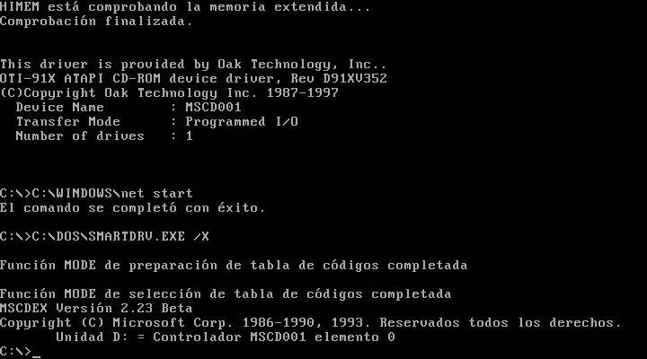

MS-DOS es un sistema operativo fruto de la evolucion de CP/M, y implementado en ordenadores domesticos desde la creación de su primera variante (Apple DOS, en 1979). No obstante, su variante más conocida fué MS-DOS, la variante lanzada por Microsoft en 1981, que además de ser la más exitosa comercialmente, fué una de las mas longevas, siendo actualizada hasta la version 6.22 como interfaz primaria de usuario, y actualizada hasta la version 7.1, pero viendose tapada por Windows 95 y 98, respectivamente. Finalmente, fue sustituido como nucleo de los sistemas operativos posteriores por Windows NT; el mismo que daba vida a OS/2, creado a raíz de la colaboración entre Windows e IBM. Actualmente, los únicos vestigios existentes de MS-DOS son le interprete de comandos (o CMD), con una sintaxis bastante parecida a la de MS-DOS, y algunos archivos del sistema con el mismo nombre, como AUTOEXEC.BAT, ahora conocido como AUTOEXEC.NT, o CONFIG.SYS, que mantiene su extensión. Si quieres conocer mas información sobre MS-DOS, a continuación dejo una serie de links para aquellos que quieran conocer más en detalle este sistema operativo:
Como puedes apreciar, MS-DOS fue el inicio de la linea exitosa de sistemas operativos de Microsoft, marcando un antes y un despues en el desarrollo de sistemas operativos, y fué ademas el que tuvo la trayectoria más larga de la compañia, puesto que gozó del soporte tecnico de Microsoft hasta el año 2010, como versión incluida dentro de Windows Me.
Si deseas probar MS-DOS, aun es posible mediante el uso de una maquina virtual, mediante la cual podrás realizar y probar la mayoria de tareas basicas de este entrañable sistema operativo. A continuacion os dejo una serie de articulos divididos en varias paginas con tal de que logreis la instalacion de todo lo necesario para disfrutar de MS-DOS. Recomiendo encarecidamente la lectura de cada uno de ellos, con tal de entender a la perfección como funciona cada cosa en MS-DOS. También entiendo que a ciertas personas les parecza duro de diegerir, pero os aseguro que os ahorrará disputas innecesarias.
Poco a poco vereis que os vais familiarizando con los comandos de uso, con la instalación de software y su utilización, y podreis disfrutar de como era utilizar un ordenador hace una década.